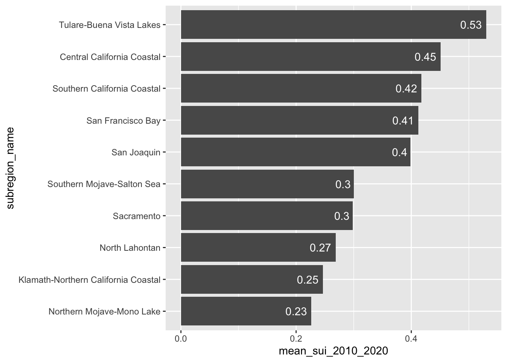
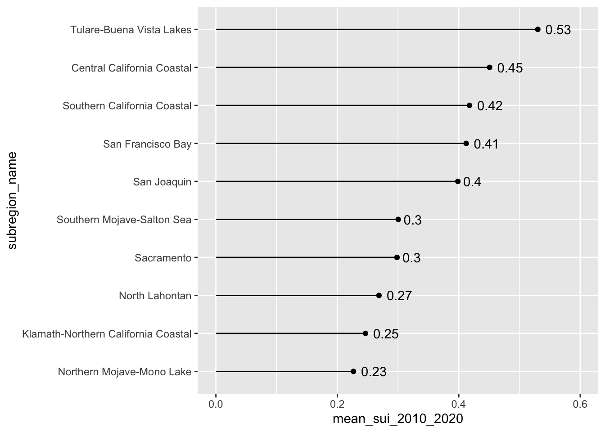
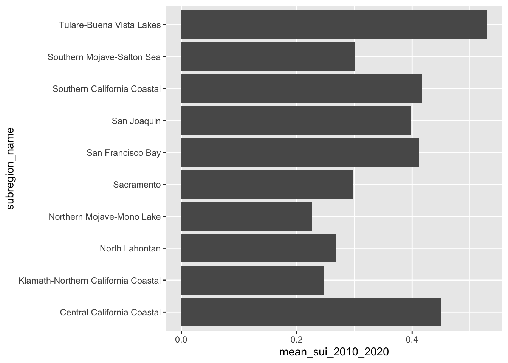
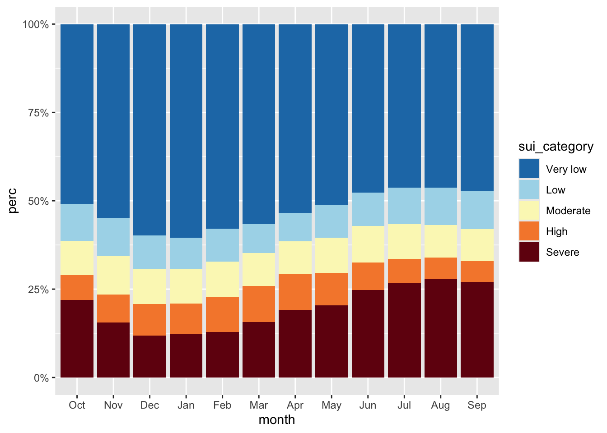
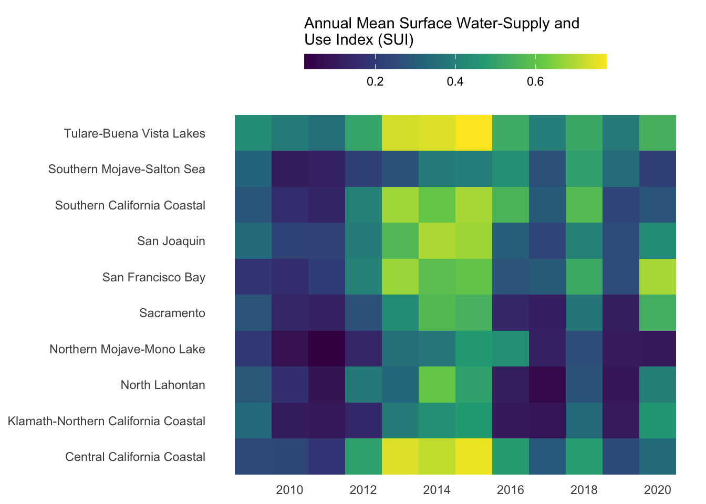
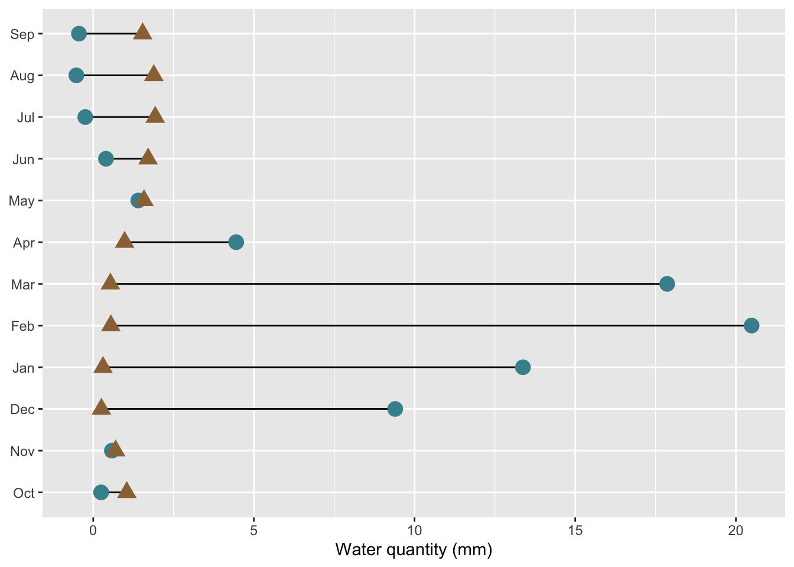

##~~~~~~~~~~~~~~~~~~~~~~~~~~~~~~~~~~~~~~~~~~~~~~~~~~~~~~~~~~~~~~~~~~~~~~~~~~~~~~
## setup ----
##~~~~~~~~~~~~~~~~~~~~~~~~~~~~~~~~~~~~~~~~~~~~~~~~~~~~~~~~~~~~~~~~~~~~~~~~~~~~~~
#..........................load packages.........................
library(tidyverse)
library(janitor)
library(scales)
#..........................import data...........................
iwa_data <- read_csv(here::here("week3", "data", "combined_iwa-assessment-outputs-conus-2025_CONUS_200910-202009_long.csv"))
#..................create df of subregions names.................
# data only contain HUC codes; must manually join names if we want to include those in our viz (which we do! we'll mainly be looking at CA subregions)
# subregions (& others) identified in: https://water.usgs.gov/GIS/wbd_huc8.pdf
# there may be a downloadable dataset containing HUCs & names out there...but I couldn't find it
subregion_names <- tribble(
~subregion_HUC, ~subregion_name,
"1801", "Klamath-Northern California Coastal",
"1802", "Sacramento",
"1803", "Tulare-Buena Vista Lakes",
"1804", "San Joaquin",
"1805", "San Francisco Bay",
"1806", "Central California Coastal",
"1807", "Southern California Coastal",
"1808", "North Lahontan",
"1809", "Northern Mojave-Mono Lake",
"1810", "Southern Mojave-Salton Sea",
)
##~~~~~~~~~~~~~~~~~~~~~~~~~~~~~~~~~~~~~~~~~~~~~~~~~~~~~~~~~~~~~~~~~~~~~~~~~~~~~~
## wrangle data ----
##~~~~~~~~~~~~~~~~~~~~~~~~~~~~~~~~~~~~~~~~~~~~~~~~~~~~~~~~~~~~~~~~~~~~~~~~~~~~~~
#......create df with just CA water resource region (HUC 18).....
ca_region <- iwa_data |>
clean_names() |>
mutate(region_HUC = str_sub(string = huc12_id, start = 1, end = 2),
subregion_HUC = str_sub(string = huc12_id, start = 1, end = 4)) |>
filter(region_HUC == "18") |>
separate_wider_delim(cols = year_month,
delim = "-",
names = c("year", "month")) |>
mutate(year = as.numeric(year),
month = as.numeric(month)) |>
left_join(subregion_names) |>
select(year, month, huc12_id, region_HUC, subregion_HUC, subregion_name, availab_mm_mo, consum_mm_mo, sui_frac)
Note
This key follows the visualizing amounts / rankings slides. Please be sure to cross-reference the slides, which contain important information and additional context!
Setup
Bar & Lollipop Plots
- bar & lollipop plots are interchangeable
- the focus is on the highest & lowest values (as well as overall rank / hierarchy)
- best for visualizing amounts across a single categorical variable
- encode values by LENGTH from 0
After building some basic plots, we’ll practice:
- making space for overlapping labels
- reordering groups
- adding direct labels
Our goal: create bar & lollipop that shows long-term mean Surface Water-Supply and Use Index (SUI) across the ten HUC 18 subregions
# bar plot ----
ca_region |>
group_by(subregion_name) |>
summarise(mean_sui_2010_2020 = mean(sui_frac, na.rm = TRUE)) |>
mutate(subregion_name = fct_reorder(.f = subregion_name, .x = mean_sui_2010_2020)) |>
ggplot(aes(x = mean_sui_2010_2020, y = subregion_name)) +
geom_col() +
geom_text(aes(label = round(mean_sui_2010_2020, 2)), hjust = 1.2, color = "white")
# lollipop plot ----
ca_region |>
group_by(subregion_name) |>
summarise(mean_sui_2010_2020 = mean(sui_frac, na.rm = TRUE)) |>
mutate(subregion_name = fct_reorder(.f = subregion_name, .x = mean_sui_2010_2020)) |>
ggplot(aes(x = mean_sui_2010_2020, y = subregion_name)) +
geom_point() +
geom_linerange(aes(xmin = 0, xmax = mean_sui_2010_2020)) +
geom_text(aes(label = round(mean_sui_2010_2020, 2)), hjust = -0.3) +
scale_x_continuous(limits = c(0, 0.6))

Note 1: geom_col() vs. geom_bar()
Use geom_col() when you want the heights of your bars to represent values in your data:
# `geom_col()` example ----
ca_region |>
group_by(subregion_name) |>
summarise(mean_sui_2010_2020 = mean(sui_frac, na.rm = TRUE)) |>
ggplot(aes(x = mean_sui_2010_2020, y = subregion_name)) +
geom_col() 
Use geom_bar() if you want the heights of your bars to be proportional to the number of cases in each group:
Stacked Bar Plots
- great for part-to-whole comparisons
- use a percentage stacked bar char twhen you want the focus to be on relative proportions
- encode values by LENGTH
Our goal: create a stacked bar chart that shows how CA subwatersheds (HUC 12s) are distributed across SUI categories
First we need to do a bit of wrangling:
# find total # of SUI obs per month ----
tot_sui_per_month <- ca_region |>
group_by(month) |>
count() |>
rename(tot_sui_per_month = n)
# create df classifying SUI values ----
sui_severity <- ca_region |>
mutate(
sui_category = case_when(
sui_frac < 0.2 ~ "Very low",
sui_frac >= 0.2 & sui_frac < 0.4 ~ "Low",
sui_frac >= 0.4 & sui_frac < 0.6 ~ "Moderate",
sui_frac >= 0.6 & sui_frac < 0.8 ~ "High",
sui_frac >= 0.8 & sui_frac <= 1 ~ "Severe",
TRUE ~ NA
)) |>
group_by(month, sui_category) |>
summarize(tot_sui_per_cat = n()) |>
drop_na(sui_category) |>
left_join(tot_sui_per_month) |>
mutate(month = month.abb[month],
month = factor(month, levels = c(month.abb[10:12], month.abb[1:9]))) |>
mutate(perc = (tot_sui_per_cat/tot_sui_per_month) * 100) |>
mutate(sui_category = factor(sui_category,
levels = c("Very low", "Low",
"Moderate", "High", "Severe")))Then create a stacked bar plot:
# create color palette ----
# pulled hex codes from USGS map using ColorZilla Chrome extension
sui_colors <- c("Severe" = "#720C0F",
"High" = "#F68939",
"Moderate" = "#FBF7BF",
"Low" = "#AAD9EA",
"Very low" = "#217AB5")
# % stacked bar chart ----
ggplot(sui_severity, aes(x = month, y = perc, fill = sui_category)) +
geom_col() +
scale_fill_manual(values = sui_colors) +
scale_y_continuous(labels = scales::label_percent(scale = 1)) 
Heatmaps
- great for visulizing matrices of data (e.g. 2 categorical + 1 numeric)
- focus is on patterns rather than precise amounts
- consider audience familiarity (may require more explanation than a basic bar plot)
- encodes values using COLOR
Our goal: create a heatmap that shows how water stress (represented by SUI) changes through time for each of the ten HUC 18 subregions
First, we need to do a bit of wrangling:
# df of annual mean SUI by subregion & year ----
heatmap_data <- ca_region |>
group_by(subregion_name, year) |>
summarize(annual_mean_sui = mean(sui_frac, na.rm = TRUE)) |>
ungroup()`summarise()` has grouped output by 'subregion_name'. You can override using
the `.groups` argument.# determine order of subregions based on highest avg SUI in 2015 ----
order_2015 <- heatmap_data |>
filter(year == 2015) |>
arrange(annual_mean_sui) |>
mutate(order = row_number()) |>
select(annual_mean_sui, order)
# join order with rest of data to set factor levels ----
heatmap_order <- heatmap_data |>
left_join(order_2015) |>
mutate(name = fct_reorder(.f = subregion_name, .x = order))Joining with `by = join_by(annual_mean_sui)`Warning: There was 1 warning in `mutate()`.
ℹ In argument: `name = fct_reorder(.f = subregion_name, .x = order)`.
Caused by warning:
! `fct_reorder()` removing 110 missing values.
ℹ Use `.na_rm = TRUE` to silence this message.
ℹ Use `.na_rm = FALSE` to preserve NAs.Then, create heatmap:

Question:
How else might you consider ordering these groups?
Dumbbell Plots
- highlight magnitude and direction of change (or difference) between two values within a category
- shows exact values, but focus is on the difference between values
- encode values using POSITION
Our goal: create a dumbbell chart to compare mean monthly water availability and consumption in the Santa Barbara Coastal subbasin (HUC8: 18060013) across the years 2010-2020.
First, we need to do a bit of wrangling:
# df mean water avail vs. consum in HUC 18060013 ----
sbc_subbasin_monthly <- ca_region |>
mutate(subbasin_HUC = str_sub(string = huc12_id, start = 1, end = 8)) |>
filter(subbasin_HUC == "18060013") |>
group_by(month) |>
summarize(mean_avail = mean(availab_mm_mo, na.rm = TRUE),
mean_consum = mean(consum_mm_mo, na.rm = TRUE)) |>
mutate(month = month.abb[month],
month = factor(month, levels = c(month.abb[10:12], month.abb[1:9])))Then, create dumbbell plot:
# create dumbbell plot ----
ggplot(sbc_subbasin_monthly) +
geom_linerange(aes(y = month,
xmin = mean_consum, xmax = mean_avail)) +
geom_point(aes(x = mean_avail, y = month),
color = "#448F9C",
size = 4) +
geom_point(aes(x = mean_consum, y = month),
color = "#9C7344",
shape = 17,
size = 4) +
labs(x = "Water quantity (mm)") +
theme(axis.title.y = element_blank())